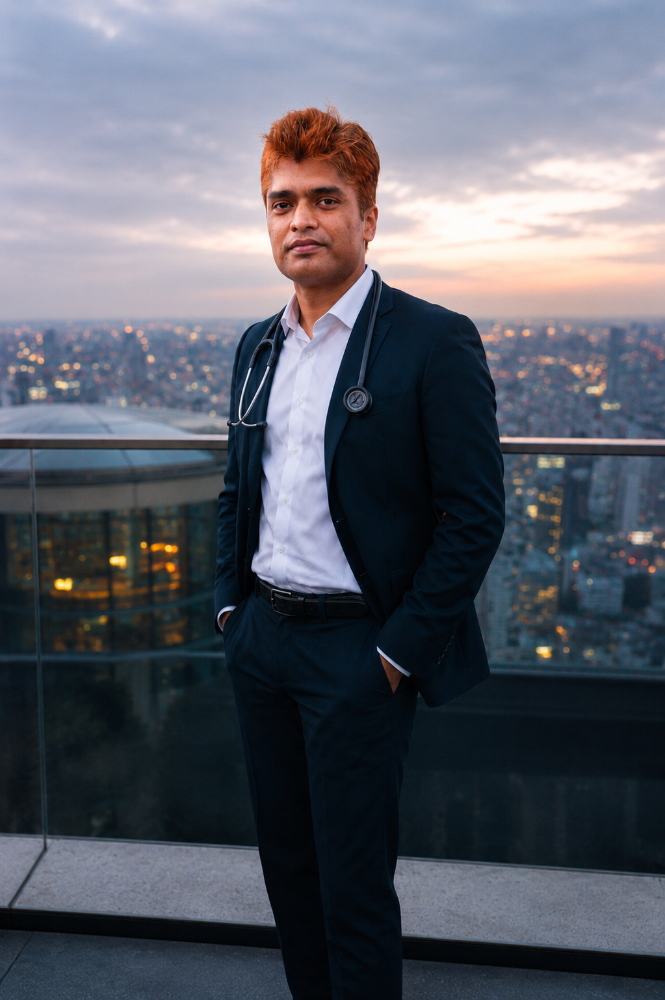

Dr. Santanu Das
Orbit, Ophthalmic Plastic and Reconstructive Surgeon
Hello everyone,
I am Dr Santanu Das, an internationally trained orbit, ophthalmic plastic and reconstructive surgeon currently based in New Delhi, India.
I have done my medical studies (MBBS and MS in Ophthalmology) from Kempegowda Institute of Medical Sciences, Bangalore followed by a clinical fellowship in Orbit and Oculoplasty from one of the best eye hospitals in India, Sankara Eye Hospital, Bangalore.
Later on, to enhance my expertise in advanced oculoplastic and reconstructive procedures I did an international fellowship from Siriraj Hospital Bangkok, a high volume tertiary care centre in Thailand. Having accumulated considerable knowledge and a deep understanding of ophthalmic plastic and reconstructive surgery, my endeavour is to provide the best possible treatment and guidance to my patients through a holistic approach.

What is Ophthalmic plastic and reconstructive surgery?
Ophthalmic plastic and reconstructive surgery also known as Oculoplasty is a sub-speciality of Ophthalmology which deals with the diseases of eyelid, eyebrows, lacrimal gland, tear drainage pathway and the bony orbit. From enhancing cosmesis, restoring confidence and vision to achieving normal functional outcomes via extensive reconstructive surgeries using implants, grafts etc, an oculoplastic surgeon can do it all. Some of the most commonly done oculoplastic procedures are enlisted below;
Commonly Performed Procedures:
- Lid abnormalities like ptosis, entropion, ectropion, retraction.
- Socket reconstruction with fat grafts, ball implants and prosthetic eye.
- Oculofacial reconstructions following trauma and tumor removal.
- Orbital fracture repair and tumor removal.
- Rehabilitative surgeries and medical treatment of Thyroid Eye Disease
- Can be part of a multidisciplinary team for treating complex orbital and facial abnormalities.
- Cosmetic procedures Like Blepharoplasty, Brow lift, Botox, etc.